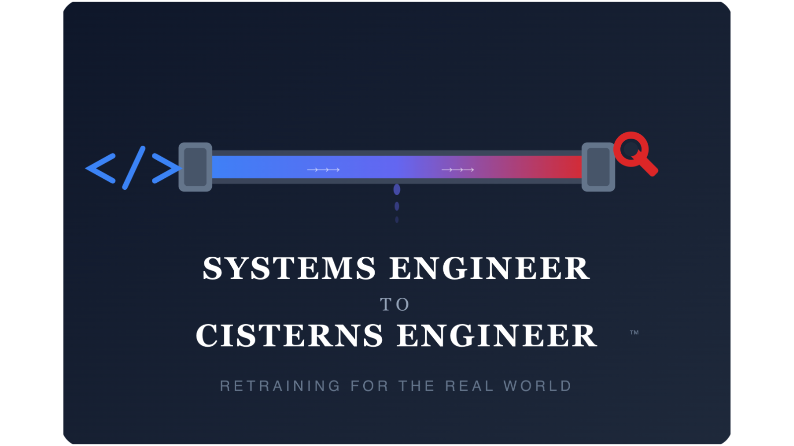

April 1st 2026 career

Last summer I was on a dive boat out of Plymouth. One of the other divers had clearly done well for himself. All the latest kit. Shearwater computer, custom drysuit, the lot. Over the course of the weekend we got chatting and I asked him what he did for a living.
He was a plumber. We chatted and I discovered the average age of a working plumber in the UK is now over 50. The industry needs an estimated 73,000 new workers by 2032 just to stand still, and nobody's coming through. Meanwhile, a self-employed plumber with Gas Safe certification is comfortably clearing £60k a year — more in London, more again if they specialise in heat pumps or emergency work. He told me that in 15 years there won't be enough plumbers to keep the country's heating on. I found it genuinely fascinating. But I'm a software engineer. It was an interesting conversation over a flask of tea on a rolling boat, and I filed it away.
Three months ago I sat down with Claude's Opus 4.5 for the first time. I don't want to be dramatic about this. I've been building software for over 20 years. I've watched every hype cycle this industry has produced. This was different.
Within about forty minutes I'd watched it do something that would have taken me the better part of a day. Not a contrived example. A real piece of work, done properly, with tests. I went to bed that night and didn't sleep. I lay there running the maths. If this is where the technology is now, where is it in two years? Three? Five? I'm not saying every software engineering job disappears overnight. But the number of people needed to do the work that currently employs millions is going to contract sharply, and it's going to happen faster than most people in the industry are willing to admit.
At about 3am, staring at the ceiling, the conversation on the dive boat came back to me.
One profession that's desperate for people. Another where the people are about to become surplus.
The next morning I called Louise Blockidge.
Louise is a master plumber. City & Guilds Level 3, 18th Edition certified, Gas Safe registered, 15 years in the trade. I've known her for years. She is, without question, the best tradesperson I've ever worked with: methodical, precise, and with a diagnostic instinct that would put most senior engineers I know to shame.
I told her what I was thinking. She thought I was joking.
I wasn't.
The idea was simple. Software engineers are, broadly speaking, problem solvers. They're used to working with systems, understanding how components connect, how flow moves through a system, where failures occur and how to trace them back to root cause. They're comfortable with technical documentation, building regulations (in the form of specifications and standards), and the concept that doing something quickly and doing it properly are often two very different things. These skills transfer. Not perfectly, and not without significant practical training. But the cognitive framework is closer than you might think. Louise and I spent three weeks putting together a curriculum. We mapped software engineering concepts to plumbing equivalents — not as a gimmick, but as a genuine pedagogical tool. It turns out that if you explain a central heating system as a closed-loop distributed network with a primary heat source, radiators as endpoint consumers, and a header tank as a buffer, software engineers grasp the architecture almost immediately. The hard part isn't the theory. It's the soldering.
We called it Systems Engineer to Cisterns Engineer.
The programme runs for 12 weeks. The first four weeks cover fundamentals: tools, materials, health and safety, building regulations. Weeks five through eight focus on domestic plumbing — supply, waste, bathroom installation, kitchen installation. Weeks nine through twelve cover heating systems: boilers, radiators, underfloor heating, and an introduction to heat pump installation, which is where the industry is heading whether it likes it or not.
Every module is taught with reference to the software equivalent. Not because the comparison is always perfect, but because it gives career-changers a mental model to hang new knowledge on. When Louise explains that you always work from the water main inwards, it helps to frame it as "deploy from the infrastructure layer up." When she talks about pressure testing a new installation before you connect it to the live supply, every developer in the room immediately understands — it's staging before production.
Some of the mappings are surprisingly precise. Others are a stretch. But the approach works. Our trial cohort of eight students — all software engineers, ranging from a junior developer with three years' experience to a VP of Engineering who'd been managing 200-person teams — completed the programme in March. Seven of the eight passed their Level 2 assessment first time. The eighth, Dave Baulcok, failed on a technicality involving a compression fitting and passed on resit two weeks later. He's now doing his placement with a firm in Reading and by all accounts is doing well, despite occasionally referring to his toolbox as "the stack."
I want to be clear about something. I'm not suggesting that software engineering is dead, or that everyone should panic. I am suggesting that the demand curve for human software engineers is going to change significantly in the next few years, and that most people in the industry are not remotely prepared for it. The ones who'll be fine are the ones who are already thinking about what comes next.
For some people, what comes next is plumbing. Not for everyone. It's physical work, it's sometimes unpleasant, and it requires a completely different kind of discipline. But it's skilled, it's well-paid, it's in enormous demand, and — this is the part that surprised me most — it's genuinely satisfying in a way that software often isn't. When you fix a leaking pipe, it stops leaking. When you install a radiator, the room gets warm. The feedback loop is immediate, tangible, and unambiguous. There is no JIRA ticket. There is no retrospective. There is no stakeholder who wants to know if we could make the water a slightly different shade of blue.
Steve Fawcett was a Senior DevOps Engineer at a company I won't name. He was made redundant in December when his entire team was replaced by a combination of AI tooling and three junior engineers. He joined our trial cohort in January. He's now working as an emergency drainage specialist and, in his words, has "never been happier." He told me recently that the money is better, the job satisfaction is real, and when he fixes something it stays fixed — unlike, and I'm quoting him directly here, "every microservice I ever deployed."
Rod Drayner was a Staff Platform Engineer. He's now a commercial heating engineer. He charges £300 for an emergency call-out. On Sundays, it's double.
Our first full cohort starts in September. We're taking 20 students per intake. The programme is 12 weeks, full-time, and leads to a City & Guilds Level 2 qualification. We provide all tools — and yes, we do enjoy telling software engineers that for once they'll be working with hardware they can actually touch.
If you're a software engineer and you've been lying awake at night wondering what comes next, I'd encourage you to think about this seriously. The plumbing industry needs 73,000 new workers. The software industry is about to produce a significant number of people looking for new careers. The economics are obvious. The timing is, frankly, perfect.
Louise thinks I should mention that the soldering gets easier after the first week. She also wants me to point out that software engineers are, without exception, the worst she's ever seen at sweating a copper joint on their first attempt. "Developers overthink it," she says. "It's not an algorithm. You just heat the pipe and let the solder flow."
She's right. And honestly, that might be the most important lesson of the whole programme: sometimes you just have to let the solder flow.
If you're interested, drop me a message. Applications for the September cohort close on the 15th of July. Places are limited, because unlike cloud computing, physical classrooms don't scale horizontally.
Systems Engineer to Cisterns Engineer™ is a joint venture between myself and Louise Blockidge, trading as Blockidge & Associates Ltd. Registered in England and Wales. All graduate outcomes referenced in this article are from our trial cohort and individual results may vary. No AI was used in the plumbing. Quite a lot was used in the writing, which is sort of the whole point.